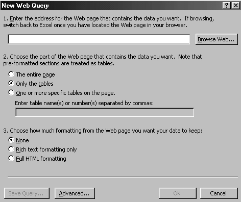
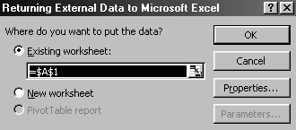
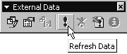
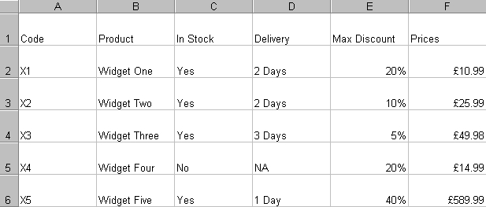

Free
computer Tutorials
|
Free
computer Tutorials
|
|
 HOME
HOME
|
Stay at Home and Learn | |||||
How to Create a Web Query in Microsoft Excel
You create a web query in Excel when you want to pull data from an internet page and pop it into a spreadsheet. You can retrieve text from a web page, data in tables, and data that is preformatted on the web page. To see how all this works, do the following:
 There are three sections to the dialogue box. The first section is where you type in the address of the internet page that you are trying to pop into Excel; the second section is where you specify which part of the web page you want to insert into your spreadsheet; and the third section sounds a bit technical, but basically you are choosing the type of formatting to use: do you want to keep the colour scheme, or strip it bare? In the first section, you need to type in the name of our internet
page. The internet page contains a table with some product information
and some prices. By all means, load it into your browser and have a
look at it. But first, you need the address. So:
http://www.homeandlearn.co.uk/ME/webquery1.htm
When you click the OK button, another dialogue pops up. This time your
are asked where in your spreadsheet you want to put the data. You only
need to specify the starting cell. The dialogue box looks like this:  The dialogue box is already set up to put your data into the spreadsheet starting at cell A1. But you could change that, if you wanted. Cell A1 is fine for us, so just click the OK button. Excel will now look for the internet address you typed. When it finds the web page, it will then take the text and the contents from the table and put them into your spreadsheet. If the Web Query seems to be taking too long, you can Refresh it. To do that, click on View > Toolbars > External Data. A toolbar pops up on your page. Click the Refresh icon, as shown below:  If everything goes well, you should have a spreadsheet that looks like the following one:  As you can see, Excel has imported the data from a web page on the internet into a spreadsheet. You now have a way to get the latest prices from Head Office!
In the next part, we'll import a web page with better formatting. |
||||||
|